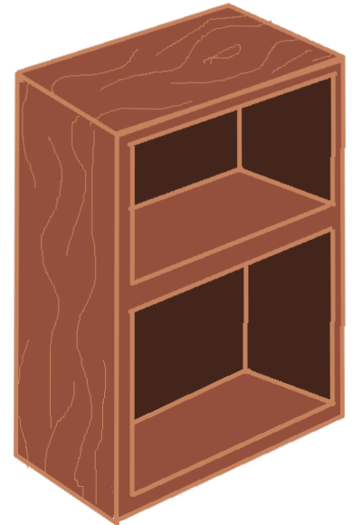
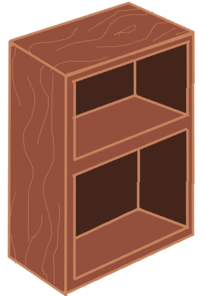
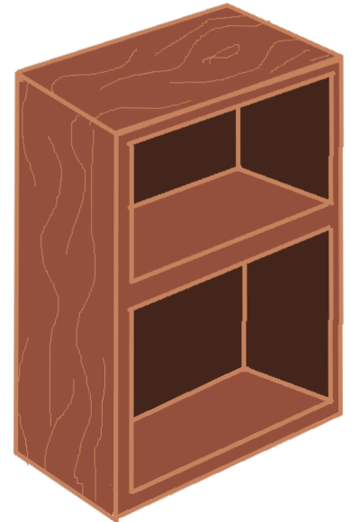
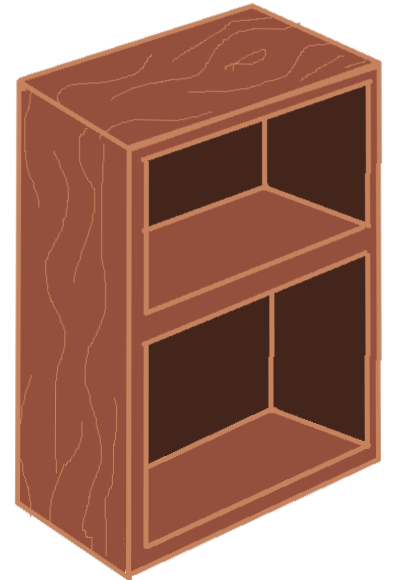

 

year: 2021
medium: p5.js, webgazer.js, projection, skin
dimensions: installation, variable
brief: Accountable, embodied, place-based engagement with research and material
This piece was created as a part of Materials and Methods: Research taught by Susan Blight. I am grateful for her support and teachings which have lead to the shaping and reshaping my process and practice. Thank all those that made time to let me interview them to better understand my own relationship with myself.
I set out to unpack my feelings of uneasy stemming from that tattoos on my body, tattoos that at the same time are a source of comfort. The main themes of descent are hybridity, body sovereignty and permanence. These themes blended further into jook-sing-ness, prescriptions of meaning, and ambiguous space.
Although loongs come in different forms, the most recognizable as "Chinese dragon" is commonly associated with wind/rain/water. I cooped this form to represent connection - the internet runs under oceans to connect many of the communities I am a part of. Also as a personal representation of my mom and the efforts she spend to connects my family to myself.
The pearl moves based on an eye tracking program which in turn controls the dragon, who sometimes moves towards but mostly moves away. A visual analogy to sentiments of wanting to be seen in contention with not wanting to stand out.
Meaning is projected onto physical features yet changes based on the canvas-made body and controlled by the onlooker.
Some text in the Modal Body
Some other text...